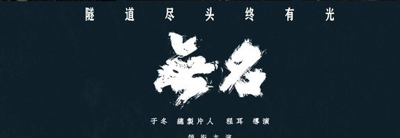

无名
故事背景
《无名》故事背景如下： 以1937年至1946年的抗日战争时期为背景，当时汪伪政府、国民党、日本侵略者内部不同派别以及中共地下党等各种势力在上海盘根交错。
剧情简介
影片讲述了中共地下工作者的故事。何先生成为汪伪特工部主任，叶秘书表面投靠日本驻上海特务头子渡部，实则都是共产党卧底。在复杂的局势中， 他们经历了日军轰炸广州、太平洋战争爆发等事件。何先生通过各种方式传递情报、破坏国民党与日本的和谈。叶秘书在经历爱人方小姐被王队长奸杀等变故后， 继续潜伏，最终取得渡部信任，获取关东军部署图。日本投降后，叶秘书杀死渡部，1946年在香港与何先生重逢。
人物介绍
- 梁朝伟 饰 何主任
- 王一博 饰 叶先生
- 黄磊 饰 张先生
- 周迅 饰 陈小姐
- 张婧仪 饰 方小姐
- 王传君 饰 王队长
电影评分
| 评分平台 | 评分 | 参与人数 |
|---|---|---|
| 豆瓣电影 | 7.1 | 6.7万余 |
| IMDb | 7.8 | 2.5万余 |
| 猫眼电影 | 9.1 | 2,945,678 |